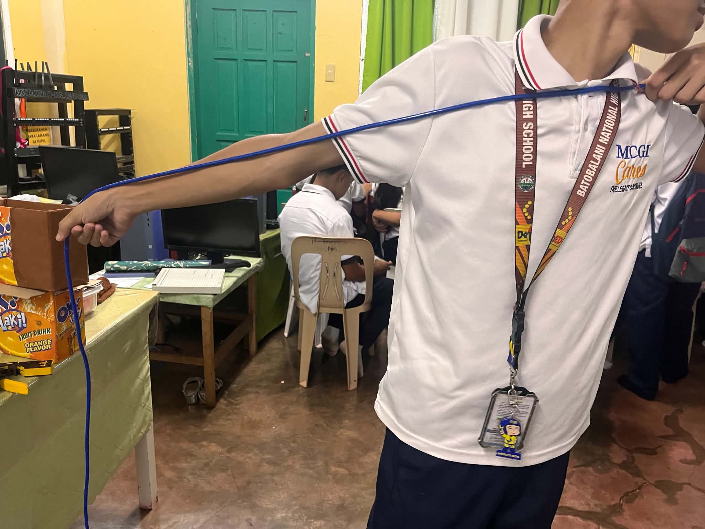
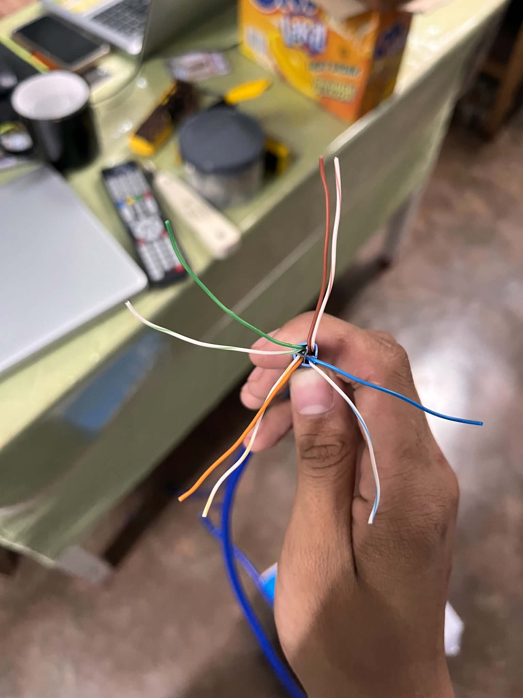
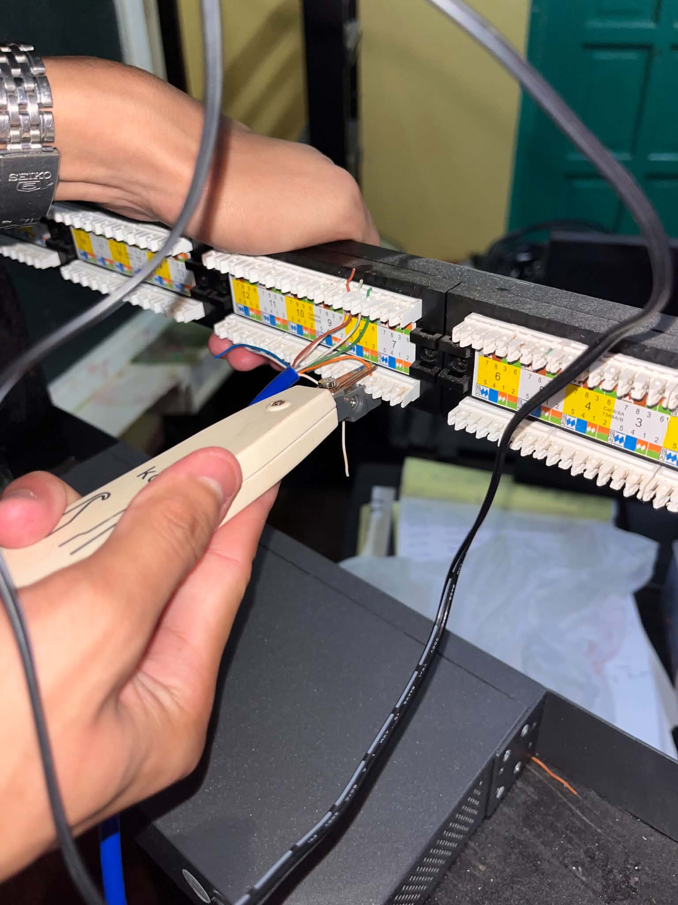
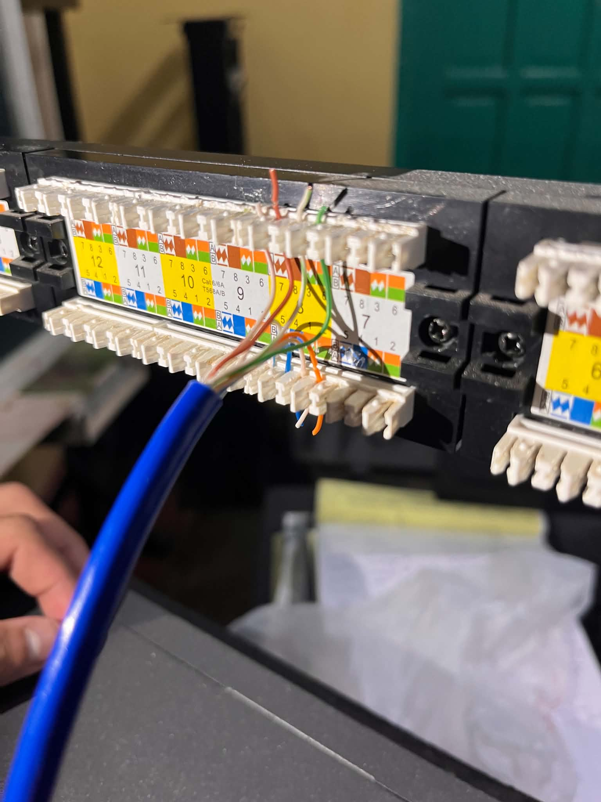

×
COC2
Patch and Terminating
First, take a LAN/UTP cable and measure out a length of up to 1 meter.
See

Next, strip the LAN/UTP cable.
See

After stripping the insulation, terminate it at the patch panel.
See

After that, you're done patching.
See
